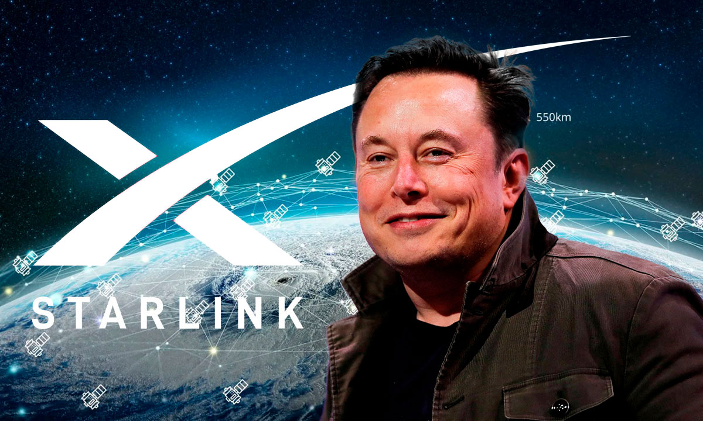
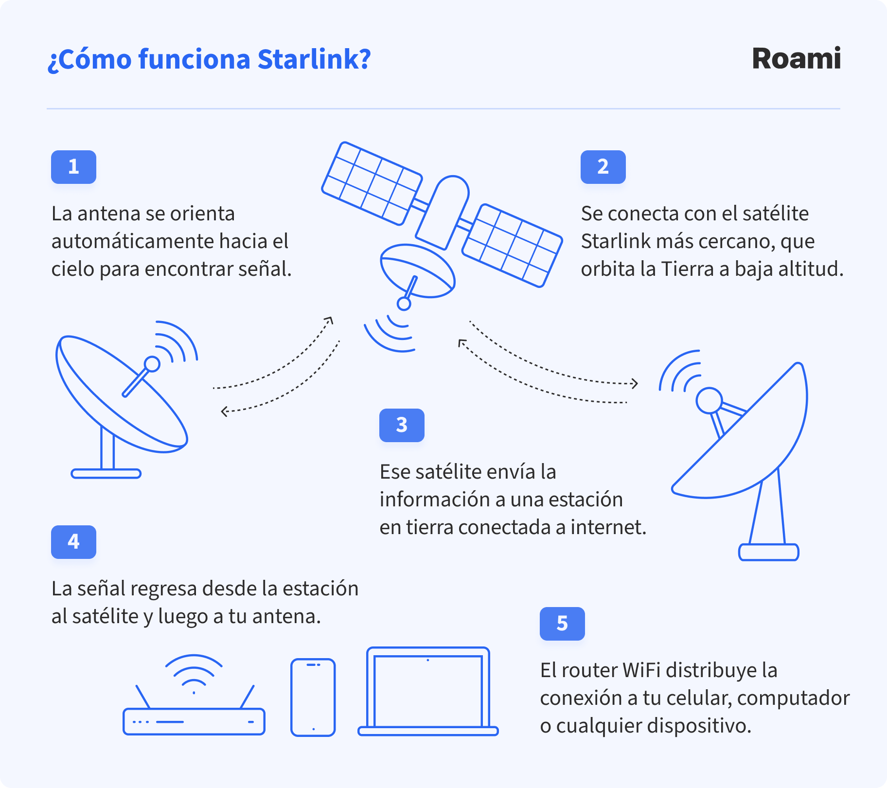
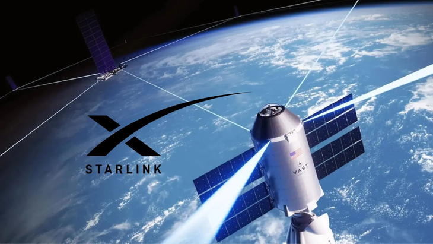
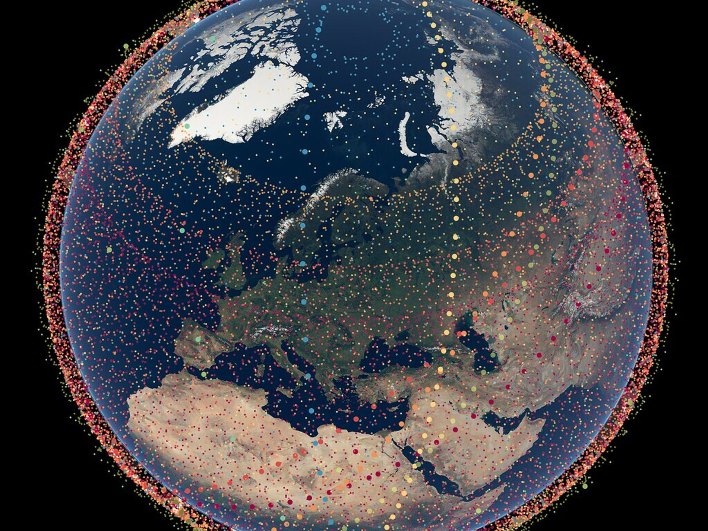

Un análisis completo sobre la constelación de satélites Starlink, su tecnología, ventajas y desafíos astronómicos.
Starlink es una constelación de satélites de órbita baja terrestre (LEO) desarrollada con el propósito principal de ofrecer acceso a internet de banda ancha de alta velocidad y baja latencia, especialmente diseñado para zonas rurales, remotas o de difícil acceso donde la infraestructura terrestre tradicional no llega.
El proyecto es liderado por la empresa privada aeroespacial SpaceX, fundada por el empresario Elon Musk. Las operaciones de prueba y los primeros lanzamientos comenzaron formalmente a finales de la década de 2010, con su primer lanzamiento masivo de satélites operativos en mayo de 2019.

El proceso de conexión de Starlink se basa en una red integrada por tres elementos fundamentales:

Los satélites de Starlink operan en una Órbita Baja Terrestre (LEO, Low Earth Orbit) a una altitud aproximada de entre 500 y 550 kilómetros sobre la superficie de la Tierra.
¿Por qué se eligió esta órbita en lugar de una órbita geoestacionaria (GEO)? Las órbitas geoestacionarias se ubican mucho más lejos (a unos 35.786 km), lo que genera un retraso o latencia muy elevado (demasiado tiempo para que la señal viaje de ida y vuelta). Al utilizar la órbita LEO, al estar mucho más cerca de la Tierra, la latencia se reduce drásticamente (a niveles de 20 a 40 milisegundos), permitiendo videollamadas fluidas y videojuegos en línea.
Ventajas: Baja latencia y alta velocidad de transmisión. Desventajas: Al estar tan cerca y moverse a gran velocidad para no caer, un solo satélite cruza rápido el cielo, por lo que se requiere una enorme cantidad de satélites (una mega-constelación) para mantener cobertura continua.

El crecimiento de la constelación ha sido exponencial con los años:

Comparativa: A diferencia de la fibra óptica tradicional o el cable coaxial (que dependen de costosos despliegues físicos de cableado en ciudades), o el internet móvil convencional (limitado por antenas terrestres de torres celulares), Starlink transmite la señal de manera inalámbrica directamente desde el espacio.
Casos de utilidad: Es especialmente útil en zonas rurales apartadas, mar abierto, selvas, montañas, o durante situaciones de emergencia y desastres naturales donde la infraestructura terrestre ha colapsado.
Problemas que genera:
El masivo despliegue de miles de satélites en órbita baja ha generado preocupación en la comunidad científica global debido a dos problemas principales:
Medidas adoptadas: Para mitigar estos problemas, SpaceX ha colaborado con astrónomos diseñando nuevas generaciones de satélites con revestimientos oscuros antirreflectantes ("DarkSat" / viseras solares) y programando maniobras autónomas de evasión de colisiones basadas en inteligencia artificial.